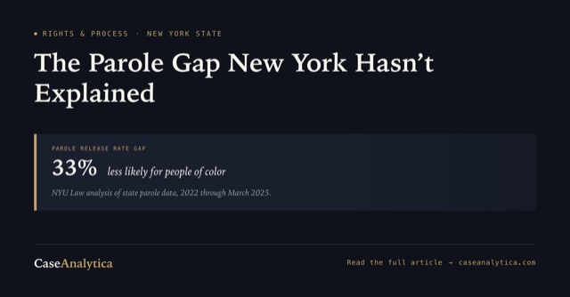
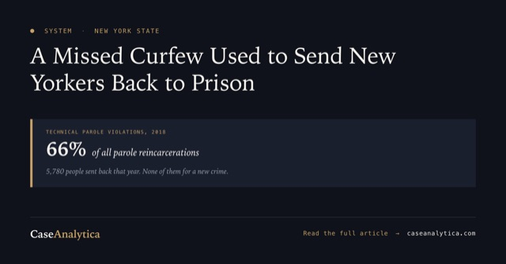
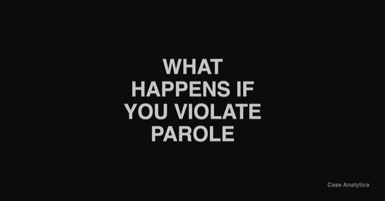
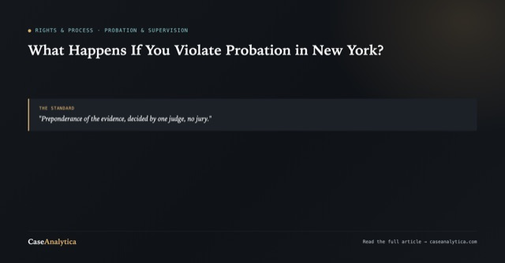
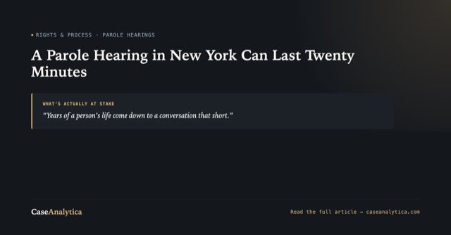

Parole and supervision
Getting out, staying out, and what happens when the state says you broke a rule. Parole is where the largest gap on this site sits between what the statute says and what happens in the room.
The figures behind these pieces are kept together, with sources, at New York parole data.
Mailing one of these to someone in state prison? See which guides fit the five-page limit.
Can You Vote With a Criminal Record in New York? What the Law Says
In New York, a conviction stops you from voting only while you are in prison for a felony. On parole, on probation or home, you can vote, but a prison term cancels your registration, and the deadline to register again for November 3 is October 24.
DHS Says Its Officers Feared for Their Lives in Marble Hill. New York's Parole Board Has to Put a Danger Finding in Writing.
An ICE officer fired seven rounds at a car with a 5-year-old in the back seat. ICE says officers believed their lives were in danger. New York makes the Parole Board put its finding of danger in writing, in detail, and open to appeal. Here is the standard for the shooting, and who can review it.
Read the Whole Parole File Before the Board Does
The Parole Board decides from a folder. Build the portfolio first, learn every document in the file and its date, and get those dates on the transcript.
Two Questions on the Record: How an EEC Actually Holds Up in a New York Parole Interview
New York's Earned Eligibility Certificate is supposed to make release the default. One client was denied and told, off the record, that his mother's criminal history made him unsafe for the community. Two short, statute-anchored questions changed what happened at his next interview.

New York's Parole Board Is 33% Less Likely to Release a Person of Color: The Data Behind the Gap
A New York University report found the state's parole board releases people of color at a rate 33 percent lower than white applicants, and the gap has widened under Governor Hochul. Here's what the data shows.

New York Led the Nation in Reincarcerating People for Breaking Parole Rules. What Less Is More Actually Changed
In 2018, New York sent thousands of people back to prison for missing a curfew or an appointment, not a new crime. Here's what the Less Is More Act changed, and what the data since shows about whether it worked.

What Happens If You Violate Parole in New York? Executive Law § 259-i Explained
Parole violation runs on a different law than probation violation, with its own hearings, deadlines, and burden of proof. Here's what Executive Law 259-i actually requires before parole can be revoked.

What Happens If You Violate Probation in New York? CPL 410.70 Explained
Probation ends the case, until it doesn't. CPL 410.70 lets a judge revoke probation and resentence you, up to what the original conviction allowed, on a lower burden of proof, with no jury. Here's how the hearing actually works.

A Parole Hearing in New York Can Last Twenty Minutes: How to Actually Prepare for One
A NY parole hearing usually runs ten to twenty minutes. Here's what the Board actually evaluates, how to build a release plan that holds up, and what to say and never say in the room.